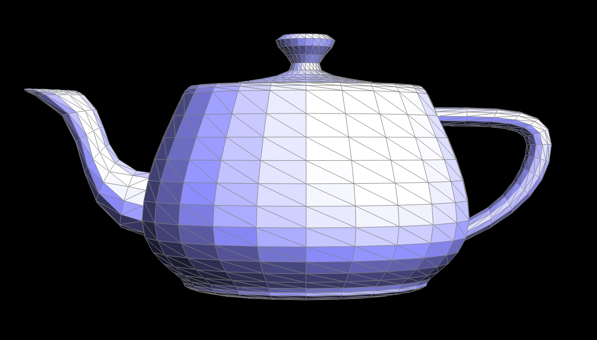
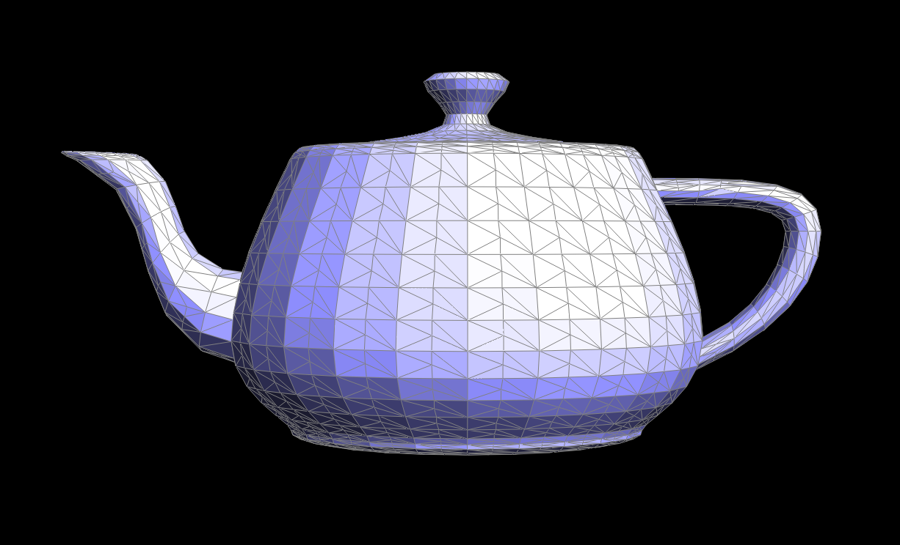
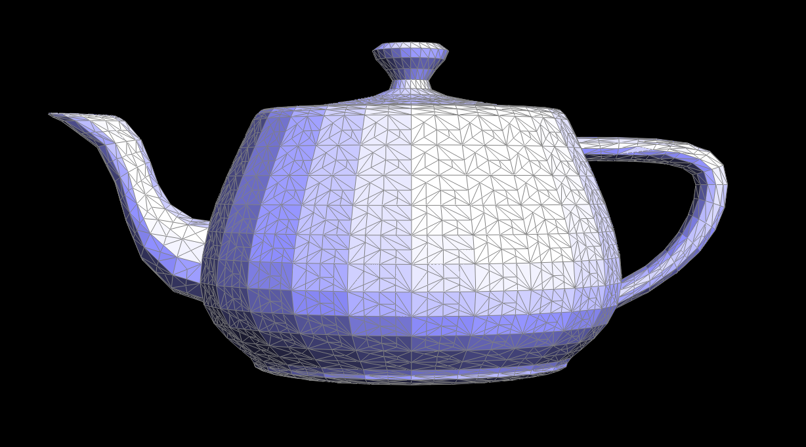
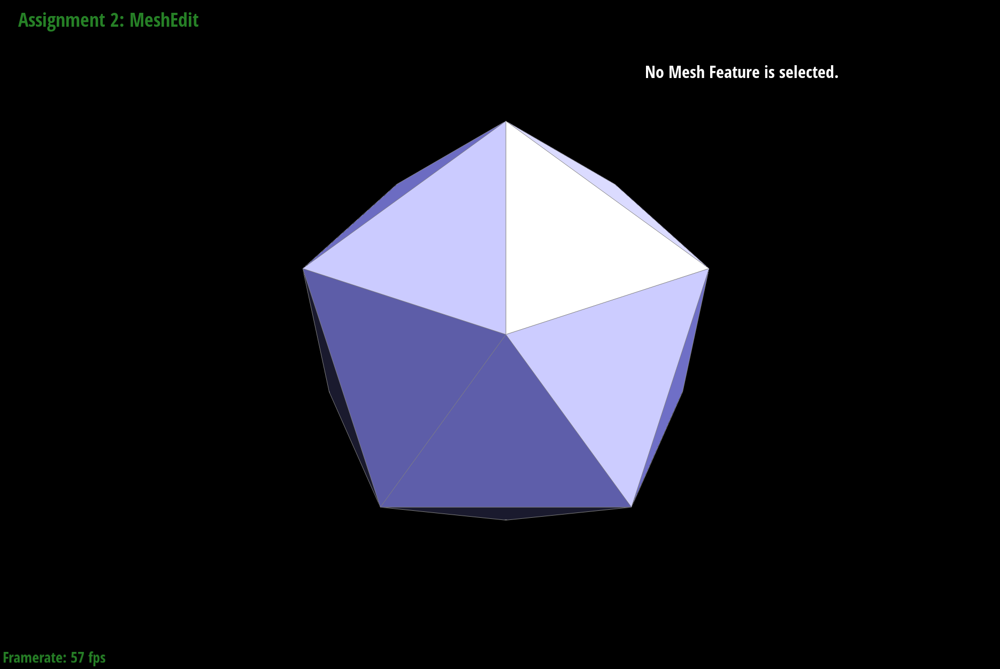
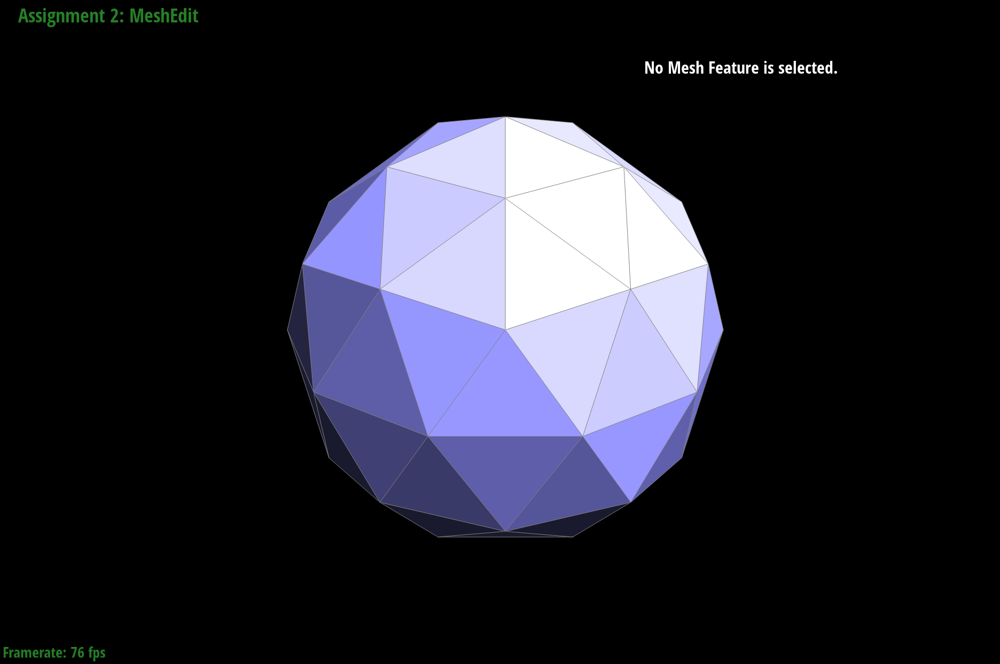
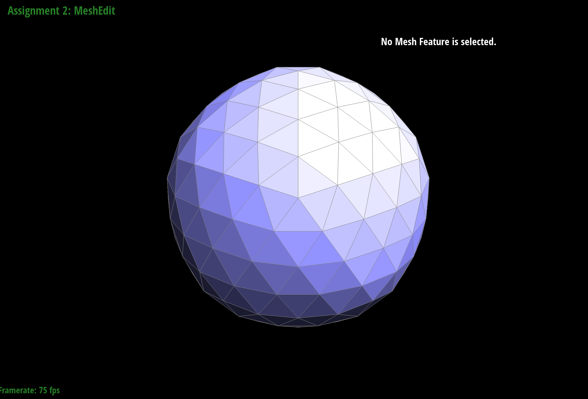
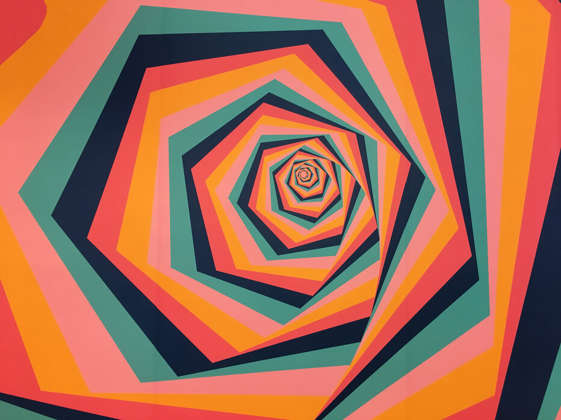
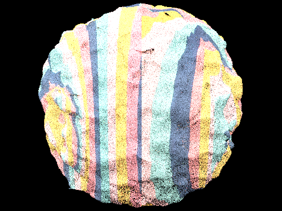

Team members: Carolann Dong, Jocelyn Tao, Nicole Jin, Jessica Ng
Link to milestone webpage: https://jessican1212.github.io/cs184finalproject/milestone/index.html
Link to presentation: https://docs.google.com/presentation/d/12SYI8L0DfaFuNYgOvyLAdcdTvO24CtEy2pt3Wtx4J1I/edit?usp=sharing
For remeshing, we've read up on ways to improve mesh quality. In homework 2, we implemented manual edge splitting and flipping. In this project, we extended that by automating these operations to iteratively improve the mesh. How it works is first we compute the average edge length across the mesh and use this to define what it means to count as a "long" edge. Then we loop through all of the edges and split the edges with length exceeding this threshold. This helps eliminate overly long or stretched triangles helps make the mesh more uniform in size. After splitting, we perform edge flips to improve the mesh connectivity. For each edge, we check whether flipping it would improve the valence of surrounding vertices. Ideally, the valence of each inner vertex should be close to 6. If flipping an edge brings the valence closer to 6, then we flip it. Overall, this automated process improves the mesh quality and connectivity, resulting in a more stable and grid-like mesh for rendering.
For new subdivision schemes, we've read up on some possible new schemes that were not covered in homework 2. So far, we've implemented
the butterfly subdivision scheme by building off of the code provided in homework 2.
We mainly accomplished this by replacing the MeshResampler::upsample function with a
MeshResampler::buttefly function. We learned that butterfly subdivision differs from the original loop
subdivision scheme we implemented in a few ways, and we implemented the butterfly subdivison as follows:
For new subdivision schemes, we've read up on some possible new schemes that were not covered in homework 2. So far, we've implemented the butterfly subdivision scheme by building off of the code provided in homework 2.
We implemented a rough version of texture mapping in our hw3 path tracer. We used the texture class code from hw1: rasterizer for the texture sampling methods. Upon ray intersection with triangles, we computationally generate UV coordinates based on the world-space hit point. The next step is replacing the generated UVs with per-vertex UVs from the .dae file, and then perform barycentric interpolation to make the texture look less deformed on the scene.
For automatic remeshing:
|
 |
 |
 |
For butterfly subdvision scheme:
|
 |
 |
 |
For texture mapping:
|
 |
 |
We've been pretty on track so far with our project, but we did want to continue with code implementation coming up on week 3 as well, adding edge collapse and vertex shifts to the remeshing algorithm and experimenting with things like more subdivision schemes now that we have some of the code running. We also have yet to test our pipeline end-to-end.